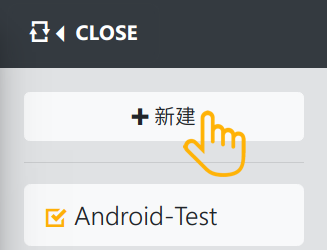
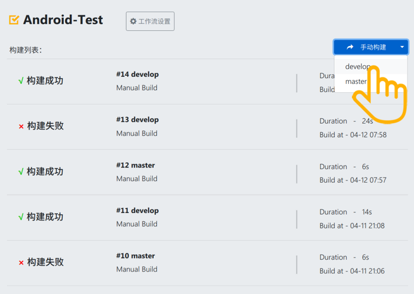
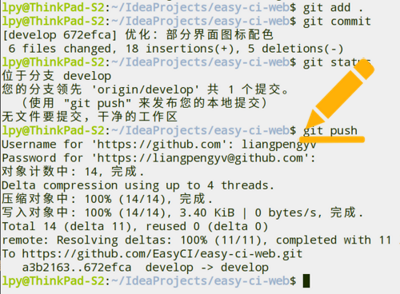
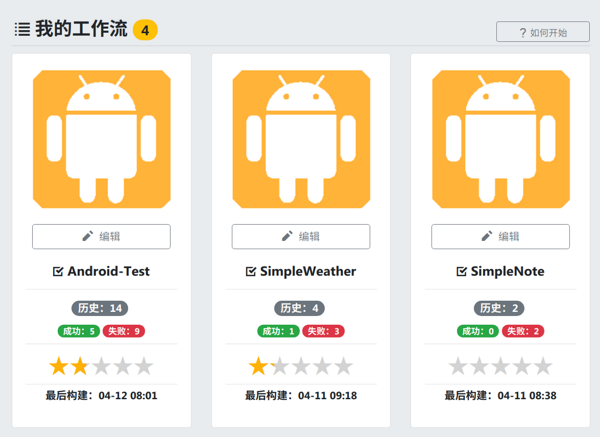

我的工作流 {{flowDetailResponse.flowDetails.length}}

{{flowDetail.flow.name}}
历史：{{flowDetail.historySum}}
成功：{{flowDetail.successSum}} 失败：{{flowDetail.failureSum}}
最后构建：{{flowDetail.lastBuildTime}}
》如何开始一次构建

① - 创建 Flow 并配置工作流
● 点击左上角「工作流」，选择「新建」
● 填写项目名称，选择 Git 仓库源，勾选触发构建的分支
● 基于在线插件，配置需要的工作流
● 根据提示填写插件参数
② - 可手动触发第一次构建
● 点击「手动构建」按钮
● 选择要构建的分支
● 稍等片刻，构建任务就会开始运行
● 运行中可随时点击对应任务查看详情


& - 日常可通过 git push 触发自动构建
● 正常进行开发工作，完成一个小任务
● 本地提交并 push 到远程仓库
● 远程仓库会通过 WebHook 通知我们的 CI 系统
● EasyCI 触发器收到通知，按照预先配置开始构建
③ - 通过仪表板查看整体构建情况
● 点击顶部标题栏中央 Logo，回到首页
● 登录状态下会进入「仪表板」视图
● 这里综合展示了所有工作流的整体构建情况
● 包括构建历史、成功失败数、代码质量评级等

说明：
● 本程序暂仅支持基于 Gradle 构建的 Android 项目
了解更多……
更多帮助信息及有关本项目的介绍，点击右上角：我的 > 帮助 / 关于
● 本程序系个人毕业设计作品，线上平台仅供测试体验，个人数据可能随时被 清空！
● 项目已托管在 GitHub ，推荐根据说明进行私有部署，在内部服务器或本机使用 EasyCI 。
● 同时，欢迎关注国内首套开源持续集成（CI）解决方案 flow.ci
Go-> flow.ciCopyright © 2018 By LaoLiang. All Rights Reserved